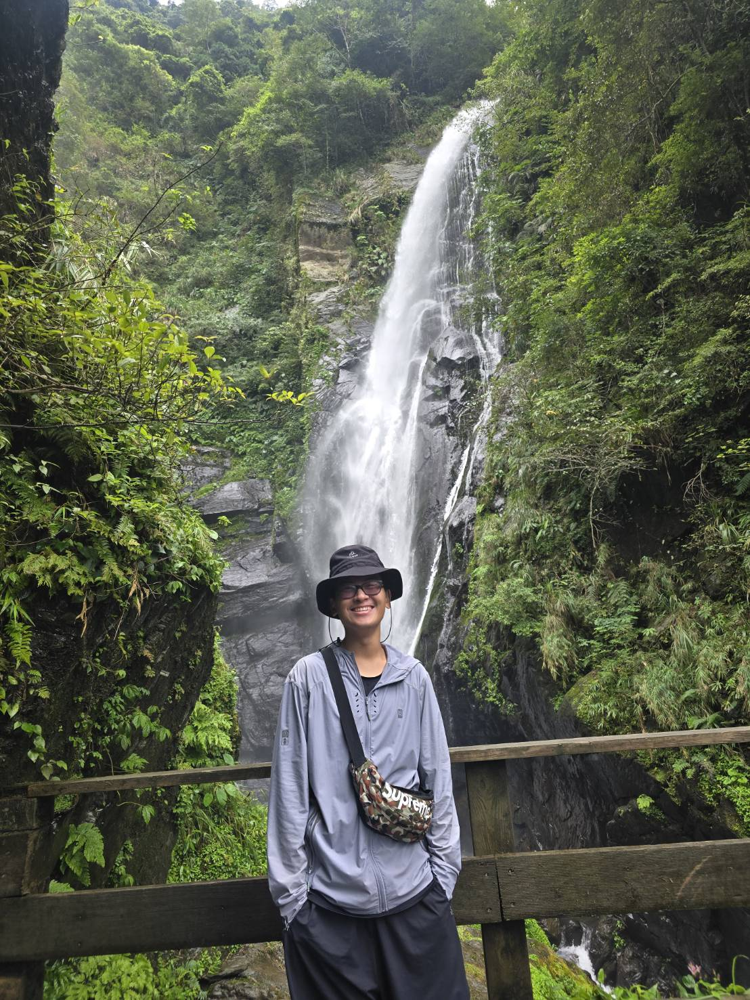
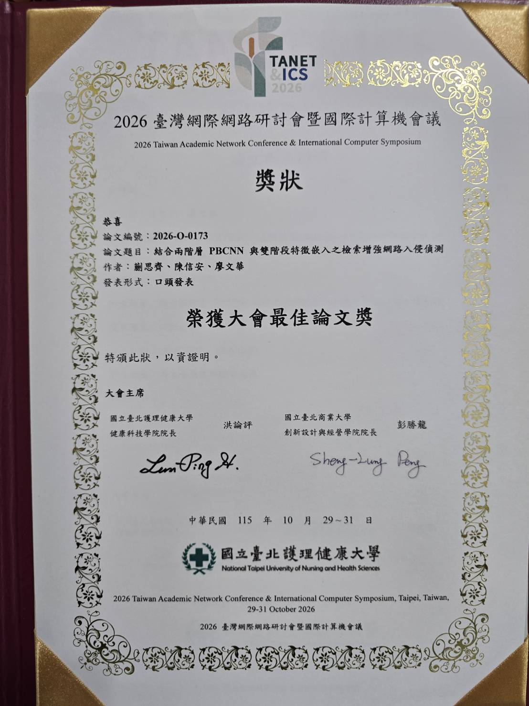
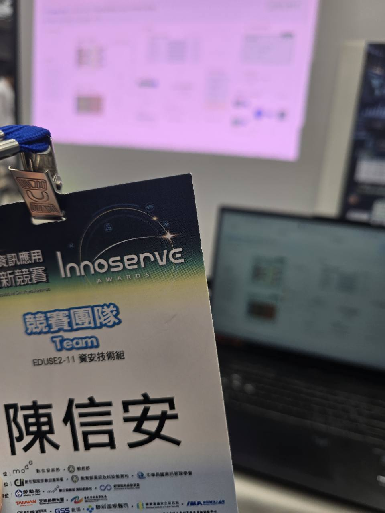
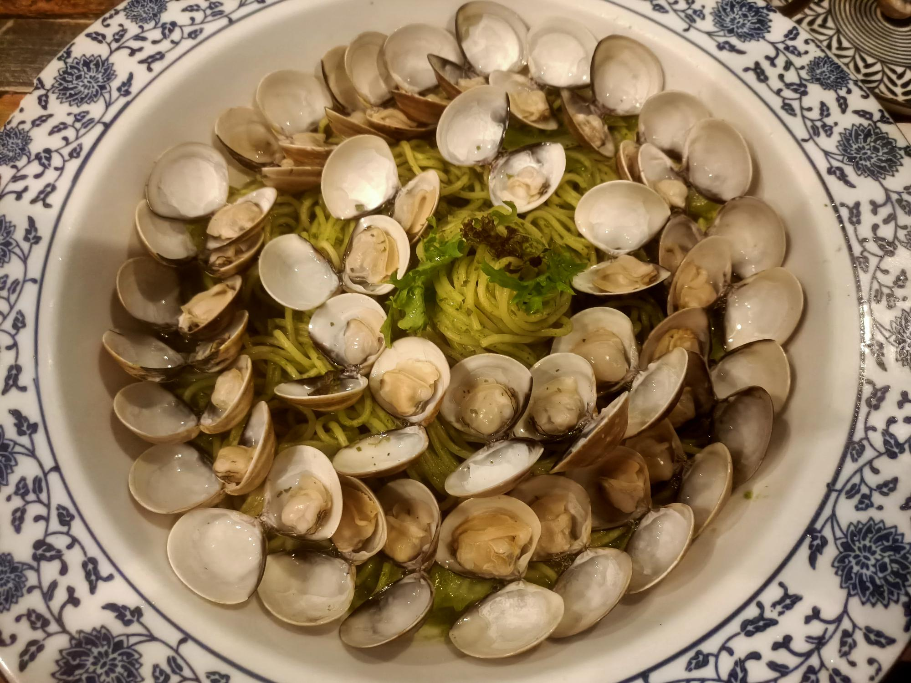

PROJECTS & EXPLORATION
從想法，到實作。
把學到的東西，做成看得見的成果。
EVENTS & ACHIEVEMENTS
活動經歷與獲獎紀錄
競賽、研討會，以及學習路上的肯定。

研討會
TANET & ICS 2026
大會最佳論文獎 · 口頭發表檢索增強網路入侵偵測研究，收錄論文發表證明與最佳論文獎證書。
閱讀發表紀錄
競賽
BizConnect Taipei 2026
商業數據組佳作參與台北數位產學實作大賽，留下參訓證明與商業數據組佳作紀錄。
閱讀競賽紀錄
研討會
第27屆永續發展管理研討會
海報發表結合 PBCNN、NS-3 與大型語言模型，探討網路攻擊偵測、防禦決策及永續治理。
閱讀發表紀錄
2026 競賽紀錄
大專校院資服競賽
以國立臺北商業大學團隊身分參與資安技術組，主要負責後段的 RAG 與 Agent，留下這次比賽的現場紀錄。
閱讀參賽紀錄學業與研究獎勵
國立臺北商業大學的學習紀錄。

LEARNING & EXPERIENCE
每一段經驗，都算數。
在學習與工作之間，慢慢累積自己的樣子。

LIFE, OUTSIDE THE CLASSROOM
也別忘了，好好生活。
喜歡的美食、走過的地方，還有 Google Maps 裡慢慢累積的日常。
看看我的生活紀錄